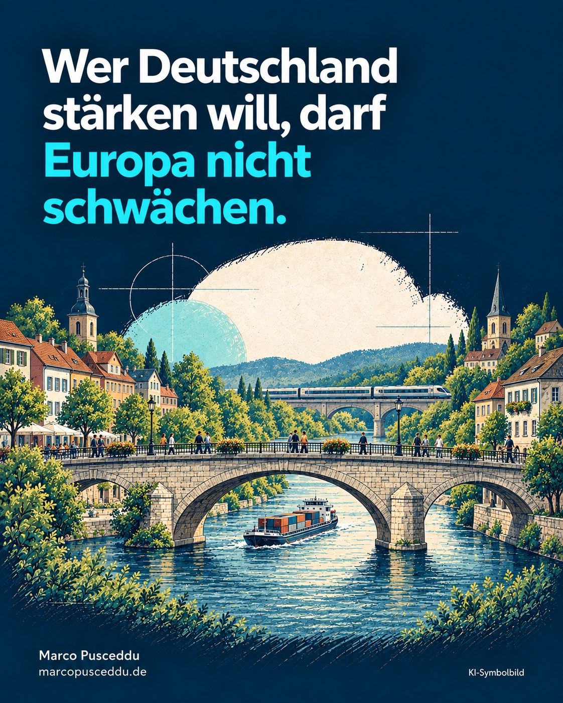

Nationalismus verspricht Stärke. Für ein Land wie Deutschland halte ich dieses Versprechen für irreführend. Wer unsere Zukunft im nationalen Alleingang sucht, unterschätzt, wie eng unser Wohlstand und unser politischer Einfluss mit Europa verbunden sind.
Deutschland liegt mitten in Europa. Unsere Unternehmen, unsere Lieferketten und unser Alltag reichen über Grenzen hinweg. Europäische Zusammenarbeit ist deshalb eine sehr praktische Frage: Wie sichern wir unseren Wohlstand, unsere Freiheit und unsere Fähigkeit, selbst über unsere Zukunft zu entscheiden?
Gemeinsames Gewicht entsteht durch gemeinsames Handeln
Die Europäische Union verbindet rund 450 Millionen Menschen. Ihr gemeinsamer Binnenmarkt gibt Unternehmen Zugang zu Kunden über nationale Grenzen hinweg und verleiht Europa wirtschaftliches Gewicht. [1]
Europa endet aber nicht an den Grenzen der EU. Auch das Vereinigte Königreich und die Schweiz gehören dazu. Zusammen mit den EU-Staaten leben allein in diesen Ländern mehr als eine halbe Milliarde Menschen. [1] [2] [3] Ihre politischen und vertraglichen Bindungen unterscheiden sich: Beide Länder gehören weder zur EU noch zum Europäischen Wirtschaftsraum im rechtlichen Sinn. Ihre Beziehungen zur EU beruhen auf eigenen Abkommen. [4] [5]
Diese Menschen bilden deshalb keinen einheitlich handelnden politischen Block. Die Größenordnung zeigt aber, welches Potenzial europäische Zusammenarbeit hat. Politische Grenzen ändern nichts daran, wie eng unsere wirtschaftlichen Interessen miteinander verbunden sind.
Gegenüber großen Wirtschaftsmächten wie den USA und China macht es einen Unterschied, ob europäische Staaten einzeln auftreten oder ihre Interessen gemeinsam vertreten. Bei Handelsbedingungen, wichtigen Technologien und wirtschaftlichen Abhängigkeiten entscheidet auch die Verhandlungsmacht darüber, wie viel Gestaltungsspielraum bleibt.
Wer europäische Zusammenarbeit schwächt, muss deshalb erklären, wie Deutschland allein mehr erreichen soll.
Nationale Verantwortung braucht einen realistischen Blick
Sein Land zu mögen, Verantwortung dafür zu übernehmen und deutsche Interessen zu vertreten, ist selbstverständlich legitim. Problematisch wird es, wenn daraus die Vorstellung entsteht, andere Länder seien grundsätzlich Gegner und internationale Zusammenarbeit vor allem ein Verlust.
Souveränität muss sich daran messen lassen, was ein Staat tatsächlich gestalten kann. Eine Entscheidung formal allein treffen zu dürfen, hilft wenig, wenn anschließend andere die wirtschaftlichen und politischen Bedingungen bestimmen.
Gemeinsames Handeln verlangt Kompromisse. Es kann uns zugleich Möglichkeiten eröffnen, die wir allein nicht hätten. Für mich gehört dieser nüchterne Blick zu verantwortlicher Politik.
Europa muss sich Kritik gefallen lassen
Die EU ist kein fertiges Erfolgsmodell, das man nur verteidigen und niemals verändern dürfte. Sie muss sich an ihren Ergebnissen messen lassen.
Ich wünsche mir ein Europa, das verständlicher entscheidet, unnötige Bürokratie abbaut und sich auf Aufgaben konzentriert, die gemeinsam besser gelöst werden können. Was vor Ort entschieden werden kann, sollte auch dort bleiben. Kommunale Verantwortung und europäische Zusammenarbeit passen zusammen.
Auch Kritik an einzelnen europäischen Entscheidungen ist nicht automatisch Nationalismus. Eine offene Debatte gehört zur Demokratie. Entscheidend ist, ob wir Zusammenarbeit verbessern wollen oder sie grundsätzlich zum Feindbild erklären.
Deutschlands Zukunft liegt in einem handlungsfähigen Europa
Die Vorstellung, Deutschland könne sich aus seinen europäischen Verbindungen lösen und dadurch automatisch stärker werden, überzeugt mich nicht. Neue Grenzen und gegenseitiges Misstrauen ersetzen keine tragfähige Antwort auf wirtschaftliche Abhängigkeiten und internationale Machtpolitik.
Unser Anspruch sollte sein, Europa gemeinsam mit unseren Nachbarn wirksamer zu machen: wirtschaftlich stark, demokratisch verlässlich und fähig, seine Interessen zu vertreten. Dazu gehören auch verlässliche Beziehungen zu unseren europäischen Partnern außerhalb der EU.
Für mich ist das eine Frage politischer Vernunft. Wer Verantwortung für Deutschland übernimmt, muss über Deutschland hinausdenken.
Nationalismus verspricht, uns größer zu machen. Er droht, unseren Einfluss kleiner zu machen.
Quellen und Einordnung
Geprüft am 6. Oktober 2026. Die Bevölkerungsangaben beziehen sich auf unterschiedliche Stichtage und dienen der Einordnung der Größenordnung.
[1] Rat der EU: Binnenmarkt – aktuell 452 Millionen Verbraucher; im Text gerundet rund 450 Millionen. Binnenmarktzugang und wirtschaftliche Bedeutung.
[2] ONS: Bevölkerung Mitte 2025, veröffentlicht 01.10.2026 – geschätzt 69,5 Millionen im Vereinigten Königreich.
[3] Schweizer Bundesamt für Statistik: vorläufige Ergebnisse 2025, 02.04.2026 – über 9,1 Millionen ständige Wohnbevölkerung Ende 2025.
[4] Rat der EU: Europäischer Wirtschaftsraum – EWR umfasst EU sowie Norwegen, Island und Liechtenstein; Schweiz über separate Abkommen angebunden.
[5] Rat der EU: Abkommen mit dem Vereinigten Königreich – eigene Handels- und Kooperationsbeziehungen nach Brexit.
Weiterlesen: Verantwortung in der Kommunalpolitik · Alle Beiträge
Dieser Beitrag gibt meine persönliche politische Bewertung wieder. Er ist keine offizielle Mitteilung der Ortsgemeinde Urbar, der Verbandsgemeinde Vallendar, der CDU oder einer CDU-Fraktion.